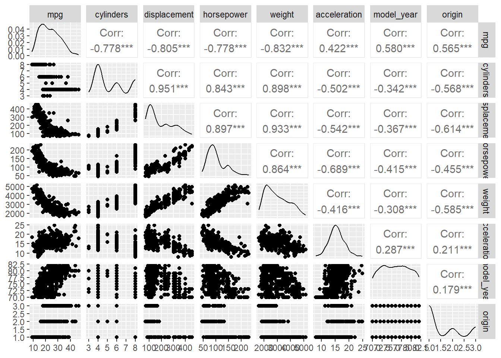
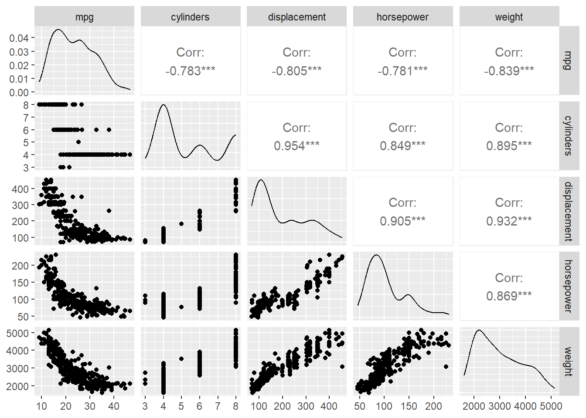
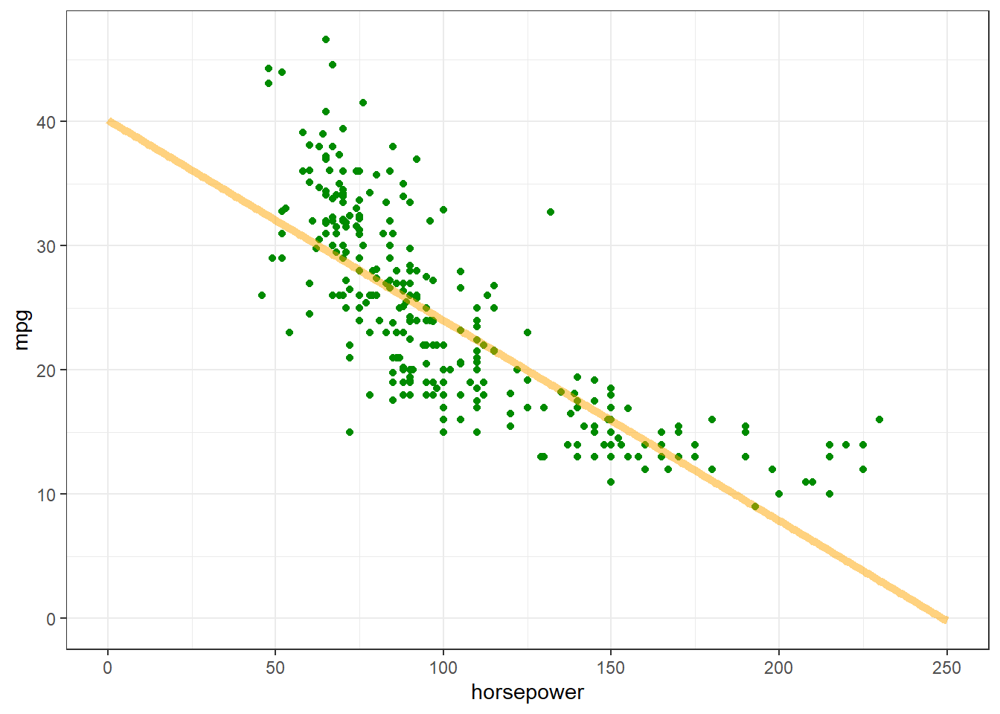
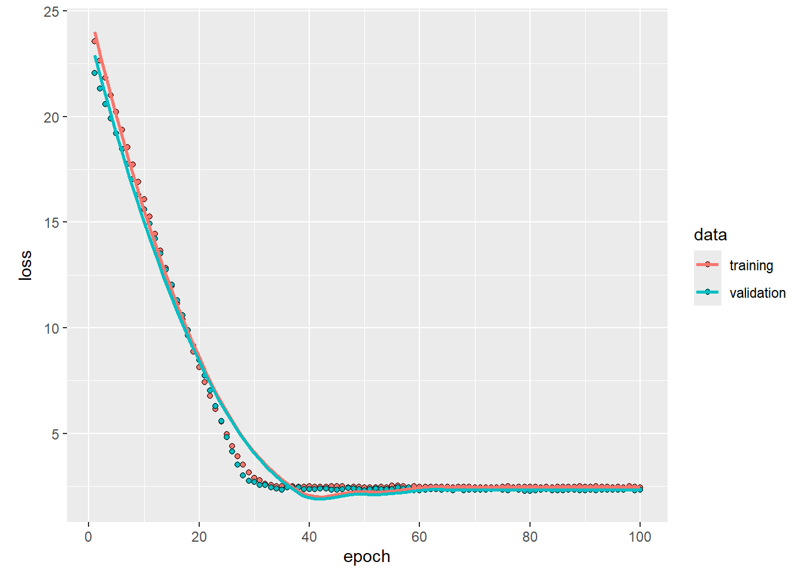
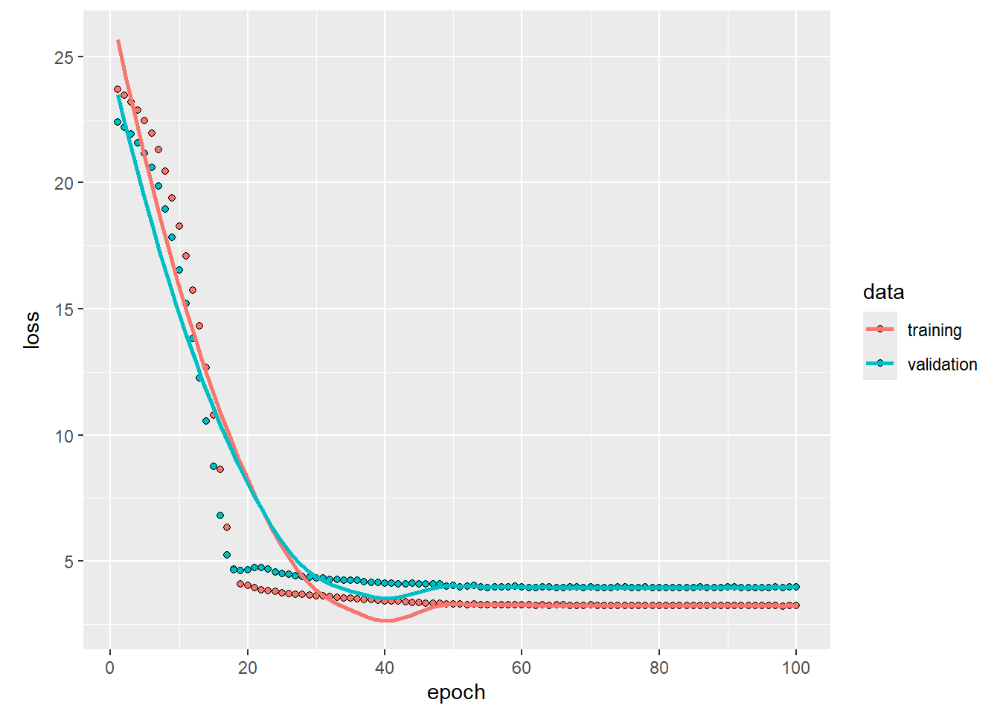
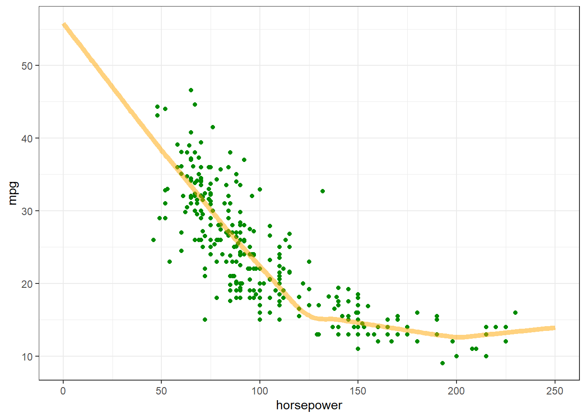
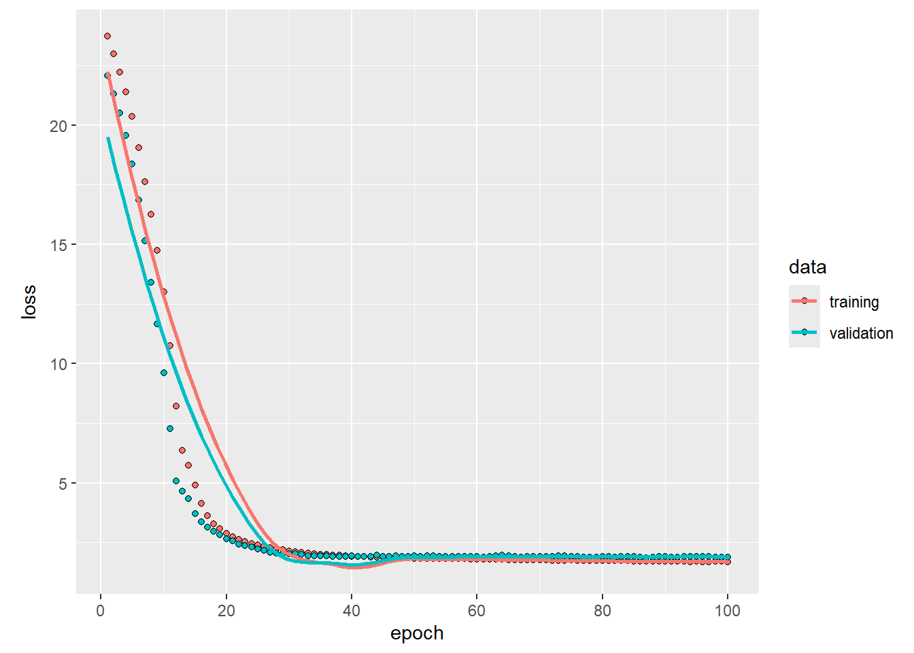
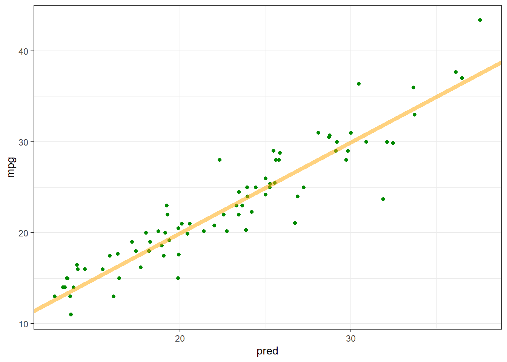
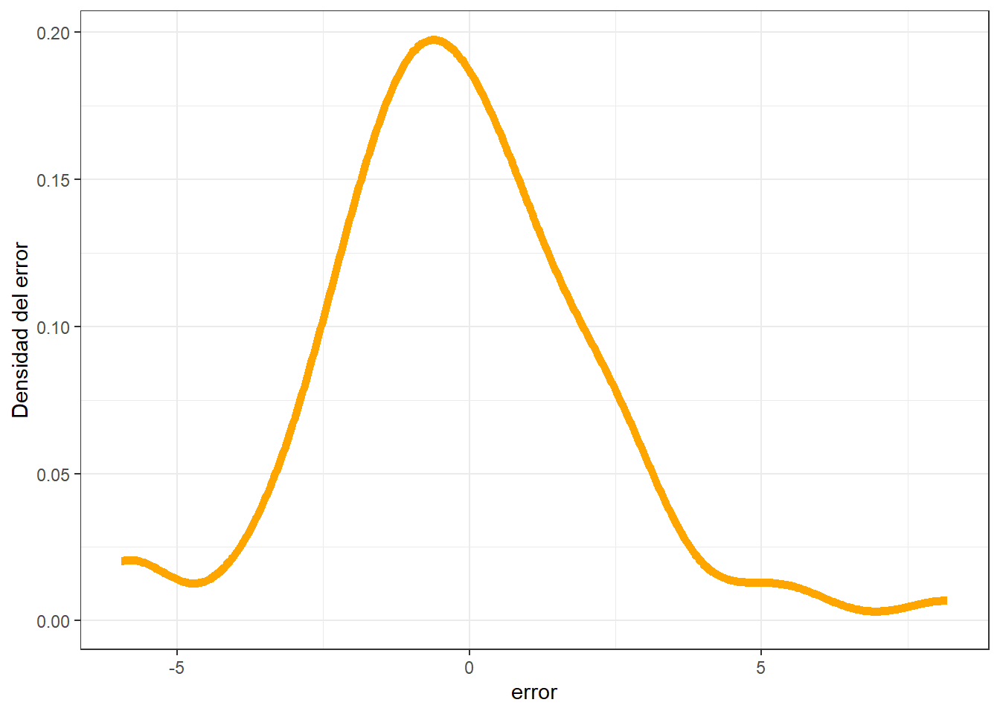

library(tensorflow)
library(keras)
library(tidyverse)
library(tidymodels)Deep Learning
DNN: Ejemplo de Keras para regresión en R
En problemas de regresión, el objetivo es predecir el resultado de un valor continuo, como un precio o una probabilidad. Esto se diferencia de los problemas de clasificación, donde el objetivo es elegir una clase de una lista de clases (por ejemplo, determinar qué numero contiene una cierta imagen, o si una imagen contiene una manzana o una naranja).
Emplearemos el conjunto de datos de Auto MPG para lograr implementar un modelo de MLP que sea capaz de estimar la eficiencia del combustible en vehículos entre fines de los 70’ y comienzos de los 80
Este tutorial emplea el clásico conjunto de datos Auto MPG y muestra cómo construir modelos para predecir la eficiencia del combustible de automóviles de finales de los años 70 y principios de los 80. Para ello, el conjunto de datos contiene una descripción de varios automóviles de esa época. Esta descripción incluye atributos como cilindros, desplazamiento, potencia y peso.
El enlace para el código original puede ser encontrado acá. Adicionalmente, existen muchos más conjuntos de datos a partir del Repositorio de Machine Learning de la UCI
1 Cargamos librerías iniciales y datos
Las librerías que utilizaremos serán las siguientes:
1.1 Datos
Descargamos los datos y los importamos a R
url <- "http://archive.ics.uci.edu/ml/machine-learning-databases/auto-mpg/auto-mpg.data"
col_names <- c("mpg","cylinders","displacement","horsepower","weight","acceleration","model_year", "origin","car_name")
raw_dataset = read.table(
url,
header = T,
col.names = col_names,
na.strings = "?"
)dataset = raw_dataset %>% select(-car_name)
head(dataset) mpg cylinders displacement horsepower weight acceleration model_year origin
1 15 8 350 165 3693 11.5 70 1
2 18 8 318 150 3436 11.0 70 1
3 16 8 304 150 3433 12.0 70 1
4 17 8 302 140 3449 10.5 70 1
5 15 8 429 198 4341 10.0 70 1
6 14 8 454 220 4354 9.0 70 11.2 Limpieza de datos
Inspeccionamos los datos y observamos que existen algunos NA
skimr::skim(dataset)| Name | dataset |
| Number of rows | 397 |
| Number of columns | 8 |
| _______________________ | |
| Column type frequency: | |
| numeric | 8 |
| ________________________ | |
| Group variables | None |
Variable type: numeric
| skim_variable | n_missing | complete_rate | mean | sd | p0 | p25 | p50 | p75 | p100 | hist |
|---|---|---|---|---|---|---|---|---|---|---|
| mpg | 0 | 1.00 | 23.53 | 7.82 | 9 | 17.5 | 23.0 | 29.0 | 46.6 | ▆▇▆▃▁ |
| cylinders | 0 | 1.00 | 5.45 | 1.70 | 3 | 4.0 | 4.0 | 8.0 | 8.0 | ▇▁▃▁▃ |
| displacement | 0 | 1.00 | 193.14 | 104.24 | 68 | 104.0 | 146.0 | 262.0 | 455.0 | ▇▂▂▃▁ |
| horsepower | 6 | 0.98 | 104.40 | 38.52 | 46 | 75.0 | 93.0 | 125.0 | 230.0 | ▆▇▃▁▁ |
| weight | 0 | 1.00 | 2969.08 | 847.49 | 1613 | 2223.0 | 2800.0 | 3609.0 | 5140.0 | ▇▇▅▅▂ |
| acceleration | 0 | 1.00 | 15.58 | 2.76 | 8 | 13.9 | 15.5 | 17.2 | 24.8 | ▁▆▇▃▁ |
| model_year | 0 | 1.00 | 76.03 | 3.69 | 70 | 73.0 | 76.0 | 79.0 | 82.0 | ▇▆▇▆▇ |
| origin | 0 | 1.00 | 1.57 | 0.80 | 1 | 1.0 | 1.0 | 2.0 | 3.0 | ▇▁▂▁▂ |
Eliminamos los NA
dataset <- na.omit(dataset)2 Pre procesamiento
2.1 Inspeccionar los datos
dataset %>%
GGally::ggpairs()
Observamos que la variable origin contiene datos categóricos \{1,2,3\}. Estos datos corresponden al lugar de fabricación de los automóviles donde (1=USA, 2=Europe, 3=Japan). Por otra parte, hacemos la transformación one-hot encoding para dicha variable. Efectuamos la transformación a continuación, utilizando la librería `recipes``:
library(recipes)
dataset <- recipe(mpg ~ ., dataset) %>%
step_num2factor(origin, levels = c("USA", "Europe", "Japan")) %>%
step_dummy(origin, one_hot = TRUE) %>%
prep() %>%
bake(new_data = NULL)glimpse(dataset)Rows: 391
Columns: 10
$ cylinders <int> 8, 8, 8, 8, 8, 8, 8, 8, 8, 8, 8, 8, 8, 4, 6, 6, 6, 4, 4,…
$ displacement <dbl> 350, 318, 304, 302, 429, 454, 440, 455, 390, 383, 340, 4…
$ horsepower <dbl> 165, 150, 150, 140, 198, 220, 215, 225, 190, 170, 160, 1…
$ weight <dbl> 3693, 3436, 3433, 3449, 4341, 4354, 4312, 4425, 3850, 35…
$ acceleration <dbl> 11.5, 11.0, 12.0, 10.5, 10.0, 9.0, 8.5, 10.0, 8.5, 10.0,…
$ model_year <int> 70, 70, 70, 70, 70, 70, 70, 70, 70, 70, 70, 70, 70, 70, …
$ mpg <dbl> 15, 18, 16, 17, 15, 14, 14, 14, 15, 15, 14, 15, 14, 24, …
$ origin_USA <dbl> 1, 1, 1, 1, 1, 1, 1, 1, 1, 1, 1, 1, 1, 0, 1, 1, 1, 0, 0,…
$ origin_Europe <dbl> 0, 0, 0, 0, 0, 0, 0, 0, 0, 0, 0, 0, 0, 0, 0, 0, 0, 0, 1,…
$ origin_Japan <dbl> 0, 0, 0, 0, 0, 0, 0, 0, 0, 0, 0, 0, 0, 1, 0, 0, 0, 1, 0,…2.2 Separación en entrenamiento y prueba
Separaremos los datos en conjuntos de entrenamiento y prueba, emplearemos un porcentaje de 80\% para el entrenamiento y un 20\% para la prueba.
split <- initial_split(dataset, 0.8)
train_dataset <- training(split)
test_dataset <- testing(split)2.3 Selección de variables para el modelo
A partir de una selección de las variables que mejor se correlacionan con nuestra variable objetivo.
train_dataset %>%
select(mpg, cylinders, displacement, horsepower, weight) %>%
GGally::ggpairs()Warning in geom_point(): All aesthetics have length 1, but the data has 25 rows.
ℹ Did you mean to use `annotate()`?
2.4 Acomodar etiquetas de regresores
En este caso, estableceremos un modelo de regresión que explica mpg en función de otras variables regresoras cylinders, displacement, weight. Si planteamos lo anterior como un modelo de regresión, tenemos:
y_{i} = \beta_0 + \beta_1 + x_{1,i} + \beta_2 x_{2,i} + \beta_2 x_{3,i} + \epsilon_{i}
con i=1, \ldots, n. Donde, Y = mpg, X_1 = cylinders, X_2 = displacement, X_3 = weight.
Necesitamos indicarle al modelo cuáles son las variables regresoras y cuáles son las variables objetivo:
train_features <- train_dataset %>% select(-mpg)
test_features <- test_dataset %>% select(-mpg)
train_labels <- train_dataset %>% select(mpg)
test_labels <- test_dataset %>% select(mpg)2.5 Normalización
Es recomendable normalizar las características que utilizan diferentes escalas y rangos.
Por ejemplo en los datos se observan escalas muy diferentes para cada uno de los predictores.
my_skim <- skimr::skim_with(numeric = skimr::sfl(mean, sd))
train_dataset %>%
select(where(~is.numeric(.x))) %>%
pivot_longer(
cols = everything(), names_to = "variable", values_to = "values") %>%
group_by(variable) %>%
summarise(mean = mean(values), sd = sd(values))# A tibble: 10 × 3
variable mean sd
<chr> <dbl> <dbl>
1 acceleration 15.6 2.83
2 cylinders 5.46 1.73
3 displacement 195. 108.
4 horsepower 105. 39.8
5 model_year 76.0 3.78
6 mpg 23.6 8.07
7 origin_Europe 0.173 0.379
8 origin_Japan 0.208 0.407
9 origin_USA 0.619 0.487
10 weight 2981. 875. Una razón por la que esto es importante es porque las características se multiplican por los pesos del modelo. Por lo tanto, la escala de las salidas y la escala de los gradientes se ven afectadas por la escala de las entradas.
Aunque un modelo podría converger sin la normalización de características, la normalización hace que el entrenamiento sea mucho más estable.
2.5.1 La capa de normalización
Añadimos una capa de normalización a nuestro modelo, a través de la función layer_normalization().
- Primer paso: Se crea la capa
normalizer <- layer_normalization(axis = -1L)- Luego se ajusta el estado de la capa de normalización a los datos, usando
adapt()
normalizer %>% adapt(as.matrix(train_features))- La media y la varianza son almacenadas en el objeto
normalizer.
print(normalizer$mean)tf.Tensor(
[[5.4551277e+00 1.9516347e+02 1.0464744e+02 2.9808433e+03 1.5561857e+01
7.6028854e+01 6.1858976e-01 1.7307693e-01 2.0833333e-01]], shape=(1, 9), dtype=float32)print(normalizer$variance)tf.Tensor(
[[2.9979866e+00 1.1541708e+04 1.5814526e+03 7.6334888e+05 7.9777446e+00
1.4245961e+01 2.3593649e-01 1.4312130e-01 1.6493055e-01]], shape=(1, 9), dtype=float32)Cuando se aplica la capa de normalización, devuelve los datos ingresados con cada uno de los regresores normalizados de manera independiente.
ejemplo <- as.matrix(train_features[1,])
cat('Sin normalizar:', ejemplo)Sin normalizar: 8 318 140 4080 13.7 78 1 0 0cat('Normalizado:', as.matrix(normalizer(ejemplo)))Normalizado: 1.469776 1.143385 0.8889816 1.258051 -0.6591836 0.5222433 0.7852262 -0.4574957 -0.51298923 Regresión Lineal
Haremos un ejemplo tomando en cuenta un modelo lineal simple y múltiple.
3.1 Modelo lineal simple
Implementaremos un modelo lineal simple para predecir la variable mpg en función de horsepower. Para implementarlo, necesitamos ejecutar dos pasos:
- Normalizar las características de
horsepowerutilizando la capa de preprocesamiento de normalización (normalization). - Aplicar una transformación lineal (y=\beta_0 + \beta x) para producir una salida utilizando una capa lineal del modelo secuencial (
dense).
El número de entradas (inputs) se puede establecer mediante el argumento input_shape, o automáticamente cuando el modelo se ejecuta por primera vez.
Primero, creamos una matriz con las características de horsepower. Luego, iniciamos la capa de normalización (layer_normalization) y ajustamos su estado a los datos de horsepower:
horsepower <- matrix(train_features$horsepower)
horsepower_normalizer <- layer_normalization(input_shape = shape(1), axis = NULL)
horsepower_normalizer %>% adapt(horsepower)Luego, construimos el modelo secuencial en Keras
horsepower_model <- keras_model_sequential() %>%
horsepower_normalizer() %>%
layer_dense(units = 1)
summary(horsepower_model)Model: "sequential"
________________________________________________________________________________
Layer (type) Output Shape Param # Trainable
================================================================================
normalization_1 (Normalizati (None, 1) 3 Y
on)
dense (Dense) (None, 1) 2 Y
================================================================================
Total params: 5 (24.00 Byte)
Trainable params: 2 (8.00 Byte)
Non-trainable params: 3 (16.00 Byte)
________________________________________________________________________________Una vez construido el modelo, configura el procedimiento de entrenamiento utilizando el método compile() de Keras. Los argumentos más importantes para compilar son la pérdida y el optimizador, ya que estos definen qué se optimizará (mean_absolute_error) y cómo (usando el optimizer_adam).
horsepower_model %>% compile(
optimizer = optimizer_adam(learning_rate = 0.1),
loss = 'mean_absolute_error'
)Ajustamos el modelo utilizando la función de Keras fit(), en este caso emplearemos 100 épocas:
history <- horsepower_model %>% fit(
as.matrix(train_features$horsepower),
as.matrix(train_labels),
epochs = 100,
# Suppress logging.
verbose = 0,
# Calculate validation results on 20% of the training data.
validation_split = 0.2
)Visualizamos el proceso de entrenamiento almacenado en el objeto history:
plot(history)
Guardar los resultaddos del conjunto de prueba
test_results <- list()
test_results[["horsepower_model"]] <- horsepower_model %>% evaluate(
as.matrix(test_features$horsepower),
as.matrix(test_labels),
verbose = 0
)También podemos graficar las predicciones de mpg en función de la variable de entrada horsepower:
x <- seq(0, 250, length.out = 251)
y <- predict(horsepower_model, x)8/8 - 0s - 71ms/epoch - 9ms/stepggplot(train_dataset) +
geom_point(aes(x = horsepower, y = mpg, color = "datos"), color="green4") +
geom_line(data = data.frame(x, y), aes(x = x, y = y, color = "predicción"),
color="orange", linewidth=2, alpha=0.5) +
theme_bw()
3.2 Modelo lineal múltiple
Se puede utilizar una configuración casi idéntica para realizar predicciones basadas en múltiples entradas (i.e. modelo de regresión múltiple). Este modelo continúa realizando la misma función y=\beta_0 + \beta x excepto que \beta es una matriz y \beta_0 es un vector.
Se debe crear de nuevo un modelo secuencial de Keras en dos pasos, siendo la primera capa el normalizador (layer_normalization(axis = -1)) que se definió anteriormente y se adaptó a todo el conjunto de datos:
linear_model <- keras_model_sequential() %>%
normalizer() %>%
layer_dense(units = 1)Configuramos el modelo con la función compile() y entrenamos usando fit() utilizando 100 épocas:
linear_model %>% compile(
optimizer = optimizer_adam(learning_rate = 0.1),
loss = 'mean_absolute_error'
)history <- linear_model %>% fit(
as.matrix(train_features),
as.matrix(train_labels),
epochs = 100,
# Suppress logging.
verbose = 0,
# Calculate validation results on 20% of the training data.
validation_split = 0.2
)Con la mayor cantidad de regresores como inputs, se logra un error de validación más pequeño que en el modelo simple (horsepower_model):
plot(history)
Guardamos los resultados:
test_results[['linear_model']] <- linear_model %>%
evaluate(
as.matrix(test_features),
as.matrix(test_labels),
verbose = 0
)4 Regresión con MLP
Anteriormente, se implementaron dos modelos lineales para entradas únicas y múltiples.
En esta parte se implementará un modelo de MLP para entradas únicas y múltiples.
El código es básicamente el mismo excepto que el modelo se expande para incluir algunas capas no lineales “ocultas”. Estos modelos contendrán algunas capas más que el modelo lineal:
- La capa de normalización, como antes (con
horsepower_normalizerpara un modelo de entrada única ynormalizerpara un modelo de múltiples entradas). - Dos capas ocultas, no lineales,
Densecon la función de activación ReLU (relu). - Una capa
Denselineal de salida única.
Ambos modelos utilizarán el mismo procedimiento de entrenamiento, por lo que el método compile está incluido en la función build_and_compile_model a continuación.
build_and_compile_model <- function(norm) {
model <- keras_model_sequential() %>%
norm() %>%
layer_dense(64, activation = 'relu') %>%
layer_dense(64, activation = 'relu') %>%
layer_dense(1)
model %>% compile(
loss = 'mean_absolute_error',
optimizer = optimizer_adam(0.001)
)
model
}4.1 Regresión simple con MLP
dnn_horsepower_model <- build_and_compile_model(horsepower_normalizer)
summary(dnn_horsepower_model)Model: "sequential_2"
________________________________________________________________________________
Layer (type) Output Shape Param # Trainable
================================================================================
normalization_1 (Normalizati (None, 1) 3 Y
on)
dense_4 (Dense) (None, 64) 128 Y
dense_3 (Dense) (None, 64) 4160 Y
dense_2 (Dense) (None, 1) 65 Y
================================================================================
Total params: 4356 (17.02 KB)
Trainable params: 4353 (17.00 KB)
Non-trainable params: 3 (16.00 Byte)
________________________________________________________________________________Entrenar el modelo con Keras y Model$fit:
history <- dnn_horsepower_model %>% fit(
as.matrix(train_features$horsepower),
as.matrix(train_labels),
validation_split = 0.2,
verbose = 0,
epochs = 100
)Este modelo mejora un poco respecto al modelo de regresión lineal con un input horsepower_model:
plot(history)
Si se grafican las predicciones como función de 'horsepower', se debería notar cómo el modelo aprovecha la no linealidad proporcionada por las capas ocultas:
x <- seq(0.0, 250, length.out = 251)
y <- predict(dnn_horsepower_model, x)8/8 - 0s - 148ms/epoch - 18ms/stepggplot(train_dataset) +
geom_point(aes(x = horsepower, y = mpg, color = "datos"), color="green4") +
geom_line(data = data.frame(x, y), aes(x = x, y = y, color = "predicción"),
color="orange", linewidth=2, alpha=0.5) +
theme_bw()
Recolectamos los resultados del conjunto de prueba, los guardaremos para después analizarlo:
test_results[['dnn_horsepower_model']] <- dnn_horsepower_model %>% evaluate(
as.matrix(test_features$horsepower),
as.matrix(test_labels),
verbose = 0
)4.1.1 Regresión múltiple con MLP
Repetir el proceso anterior, pero esta vez utilizando todos los inputs. El desempeño del modelo mejora ligeramente en el conjunto de validación.
dnn_model <- build_and_compile_model(normalizer)
summary(dnn_model)Model: "sequential_3"
________________________________________________________________________________
Layer (type) Output Shape Param # Trainable
================================================================================
normalization (Normalization (None, 9) 19 Y
)
dense_7 (Dense) (None, 64) 640 Y
dense_6 (Dense) (None, 64) 4160 Y
dense_5 (Dense) (None, 1) 65 Y
================================================================================
Total params: 4884 (19.08 KB)
Trainable params: 4865 (19.00 KB)
Non-trainable params: 19 (80.00 Byte)
________________________________________________________________________________history <- dnn_model %>% fit(
as.matrix(train_features),
as.matrix(train_labels),
validation_split = 0.2,
verbose = 0,
epochs = 100
)plot(history)
Obtenemos los resultados del conjunto de prueba:
test_results[['dnn_model']] <- dnn_model %>% evaluate(
as.matrix(test_features),
as.matrix(test_labels),
verbose = 0
)4.2 Desempeño
Ahora que tenemos todos los modelos entrenados, podemos revisar y comparar su desempeño con el conjunto de prueba:
sapply(test_results, function(x) x) horsepower_model.loss linear_model.loss dnn_horsepower_model.loss
3.358897 2.628806 2.991233
dnn_model.loss
1.742151 Estos resultados tienen sentido al comparar con el error de validación observado durante el entrenamiento.
4.2.1 Hacer predicciones
Una vez que se tienen los modelos entrenados, se pueden hacer predicciones con el dnn_model en el conjunto de prueba utilizando predict() de Keras y evaluar la función de pérdida:
test_predictions <- predict(dnn_model, as.matrix(test_features))3/3 - 0s - 55ms/epoch - 18ms/stepggplot(data.frame(pred = as.numeric(test_predictions), mpg = test_labels$mpg)) +
geom_point(aes(x = pred, y = mpg), color="green4") +
geom_abline(intercept = 0, slope = 1,
color = "orange", linewidth=2, alpha=0.5) +
theme_bw()
Parece que el modelo realiza predicciones de manera razonablemente buena.
A continuación, se verifica la distribución del error:
data.frame(error = test_predictions - test_labels$mpg) %>%
ggplot() +
geom_density(aes(x=error), color="orange", linewidth=2, alpha=0.5) +
ylab("Densidad del error") +
theme_bw()
error <- test_predictions - test_labelsSi se está conforme con el modelo, se debe guardar para su uso posterior con Model$save:
save_model_tf(dnn_model, 'dnn_model')Podemos cargar los pesos del modelo guardado, esto proporcionará la misma salida:
reloaded <- load_model_tf('dnn_model')
test_results[['reloaded']] <- reloaded %>% evaluate(
as.matrix(test_features),
as.matrix(test_labels),
verbose = 0
)sapply(test_results, function(x) x) horsepower_model.loss linear_model.loss dnn_horsepower_model.loss
3.358897 2.628806 2.991233
dnn_model.loss reloaded.loss
1.742151 1.742151 4.3 Conclusión
Este cuaderno introdujo algunas técnicas para manejar un problema de regresión. Aquí hay algunos consejos adicionales que pueden ser útiles:
- El error cuadrático medio (MSE) (
loss_mean_squared_error()) y el error absoluto medio (MAE) (loss_mean_absolute_error()) son funciones de pérdida comunes utilizadas para problemas de regresión. El MAE es menos sensible a los valores atípicos. Se utilizan diferentes funciones de pérdida para problemas de clasificación. - De manera similar, las métricas de evaluación utilizadas para la regresión difieren de las de clasificación.
- Cuando las características de datos de entrada numéricos tienen valores con diferentes rangos, cada característica debe ser escalada independientemente al mismo rango.
- El sobreajuste es un problema común para los modelos DNN, aunque no fue un problema en este tutorial. Se recomienda visitar el tutorial Sobreajuste y subajuste para más detalles en este aspecto.
Además, es esencial comprender la importancia de una validación cruzada adecuada y el uso de conjuntos de prueba independientes para evaluar la generalización del modelo. Esto garantiza que el rendimiento observado no sea un resultado de las peculiaridades de un conjunto de datos particular. También, fomentar una comprensión sólida de la teoría detrás de las métricas de evaluación y las funciones de pérdida puede proporcionar una base más profunda para la toma de decisiones críticas en el ajuste y optimización del modelo.